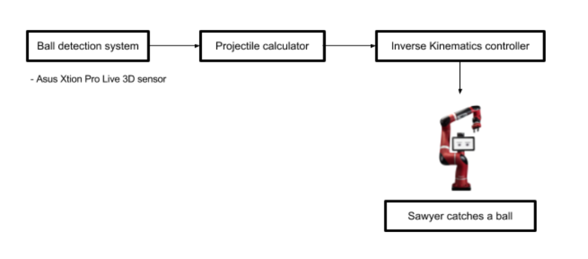
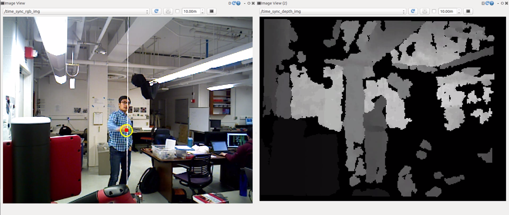
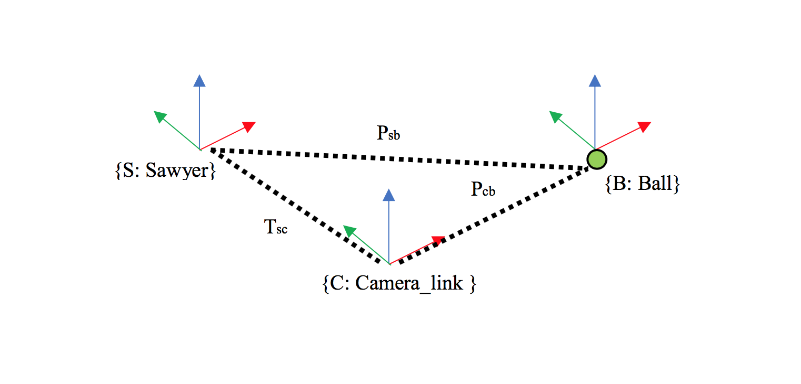

SAWYER CATCH'EM ALL

Overview
The goal of this project is to operate Sawyer, the manufacturing robot by Rethink Robotics, to catch a ball thrown at him. The hardware used are Sawyer and a stereo camera with RGB and depth sensor. The system functions in 3 main parts: detecting the ball position, predicting the final position of the ball and moving the arm with Jacobian based endpoint control algorithm to catch the ball. The system runs via Robotic Operating System (ROS) with Python scripts.
Part 1: The Ball Detection System
Just like human needs eyes to see objects, Sawyer needs an RGBD camera to detect the position of the ball. Here, we use Asus Xtion Pro run with openni2 package. Together, they can process a stream of RGB and depth images separately. The RGB image is in the form of a multi-dimensional array of type uint8 with three layers of rectangle (with x length y width) specifying the color of each pixel based on RGB. Conversely, the depth image is the matrix of the same type and size but only one layer. The number in each cell of the depth image represents the physical distance of that pixel from the camera frame. For example, the whiter the pixel is, the further the object is from the real camera.

The left image is an RGB image and the right one is a depth image. Comparatively, the white part of the depth image correlates with the far object such as the wall, while the black part in the bottom left correlates to the robot head close to the camera frame.
My strategy for detecting the ball is to get the position of the pixel at the center of the ball in the RGB image (the red dot in the image above), and then perform some processes to know how far the ball is from the camera frame.
To get the position of the pixel representing center of the ball in an RGB image, the color of the ball has to be tracked first with OpenCV functions. The ball is then enclosed in a circle, and the center position is recorded.
After that, the position is processed through projectPixelTo3dRay function and the depth scaling process to get the approximated ball position relative to the camera.
However, the desired final position needs to be relative to Sawyer not the camera since the camera is not attached to Sawyer.

From the image, T represents the transformation matrix describing the position and orientation of a frame relative to the other frame. Correspondingly, P represents the 3x1 matrix describing the relative position between two positions.
With matrix multiplication, we can get the position of the ball relative to Sawyer.
Part 2: the final position prediction
The projectile calculating algorithm estimates the future position of the ball by fitting the 3D parabola plot with RANSAC. The plot is being updated through throwing.
Part 3: Catching the ball with Jacobian based endpoint control algorithm
Since each throw spends around a second or so, the arm must be moved within a second. Before every move, the hand will be moved to home position. The damped least square inverse kinematics is used to find joint velocity for each joint of the robot arm to place the end-effector at desired point. We need to specify damping constant that is “large enough so that the solutions for joints are well-behaved near singularities, but if it is chosen too large, then the convergence rate is too slow.” This method focuses on minimizing the chance of having the set of joints that move end-effector to the unreachable point.
Result
Sawyer can move his hand to the predicted solution. However, his hand needs to move faster than half a second to catch the ball. Possibly, the velocity is clipped down by the factory-set-limit since Sawyer is supposed to be working with human on a factory floor.

Let's see more
Acknowledgements
- Dr.Jarvis A. Schultz, the associate director of Ms in Robotics, Northwestern University